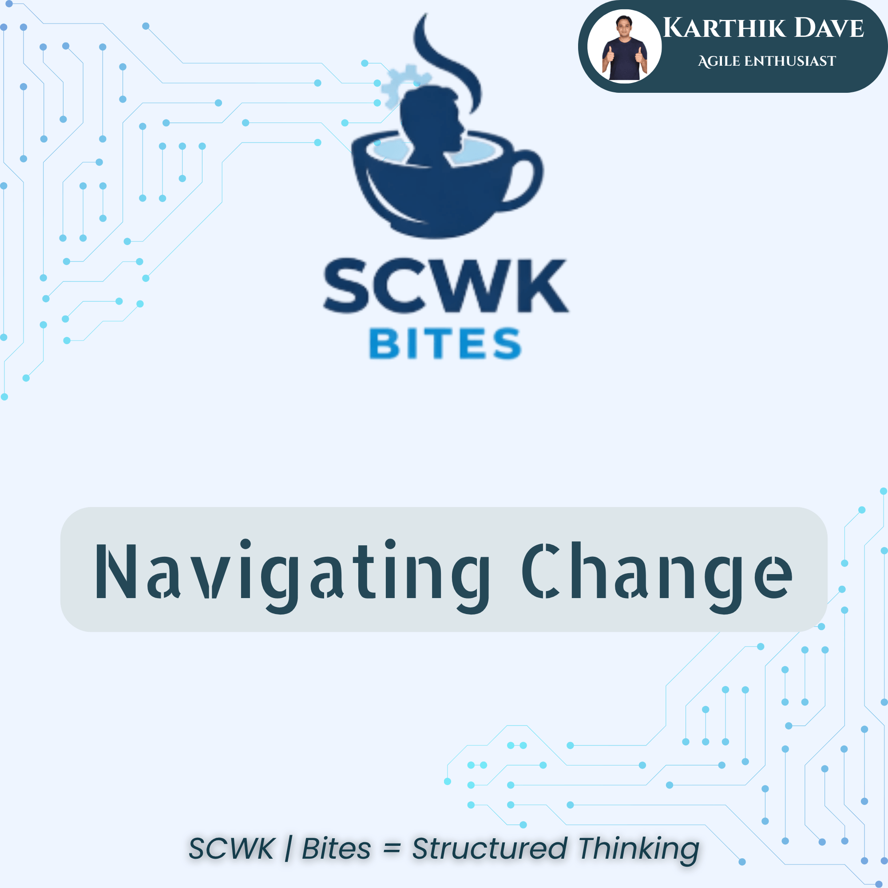
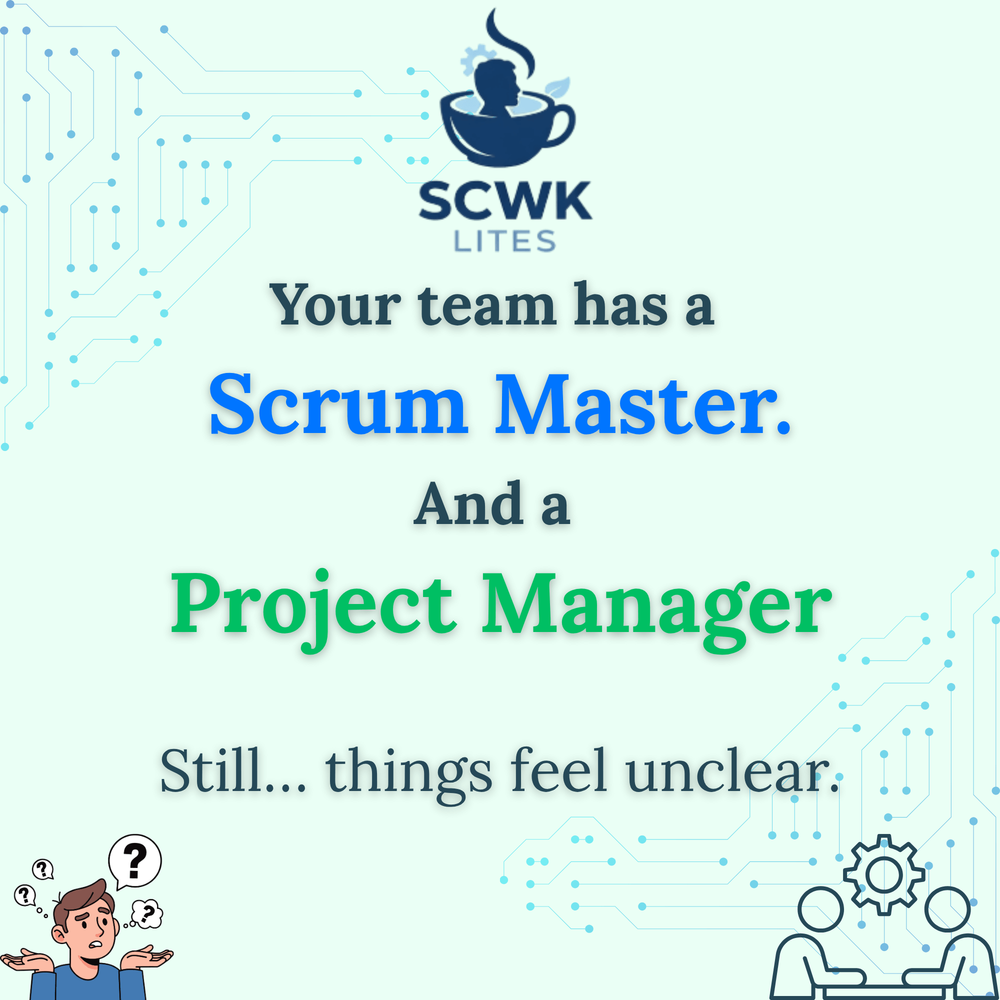

SCWK captures real patterns from real teams — the moments where things feel “off”… but no one can clearly explain why.
Scrum & Coffee with Karthik is a collection of real-world insights from working with Scrum teams. Not theory. Not frameworks. Just what actually happens inside teams — and why it often doesn’t work the way we expect.
If you’re new, begin with the latest insights.


Short moments where you suddenly realise — things aren’t working the way you thought.
Simple explanations that bring clarity to messy Scrum problems.
You don’t need more frameworks. You need clearer thinking inside your team.